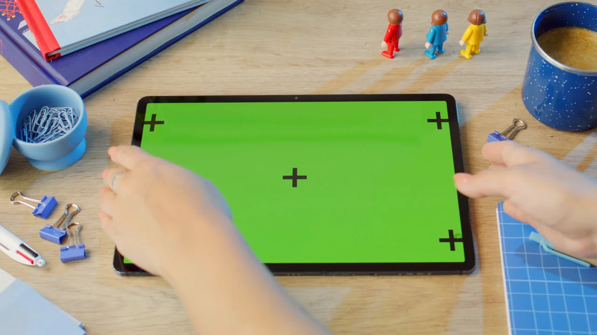

OBJECT MEMORY · RECORDED RUNWhat objects appeared?
A fixed-camera desk scene produces timestamped tablet and mug observations, stored for later retrieval.
Stored answer: The model reports a tablet at 0.00, 1.75, 3.54 and 5.30 s, and a mug at 5.30, 7.09 and 8.84 s.
Stored model-generated object observations; independently unverified.